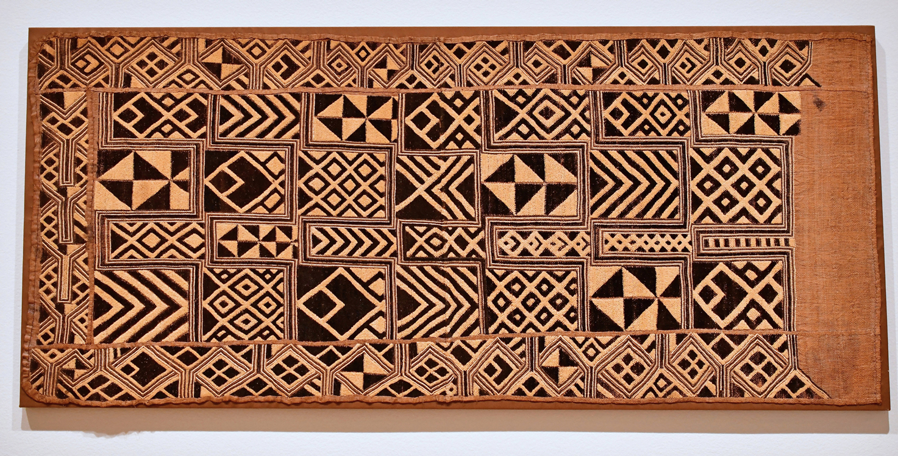

✨ We Remember Where We Come From ✨
"We are not lost — we were carried.
Through forests, through rivers, through silence, we survived.
From the red soil of Dominica to the sacred heart of Africa, we remember."
🌠From the Forests of Central Africa
Our father’s Y-DNA leads us to the Akele people, part of the Bantu nations of Gabon and Congo.
- Forest-based spiritual harmony
- Knowledge passed through drumming, dance
- Echoed in Caribbean rhythms
We inherit strength, dignity, and an unbreakable spirit.
🌬️ From the Savannas of West Africa
Our matrilineal DNA links us to the Fulani people — pastoralists and visionaries of West Africa.
- Grace in endurance
- Stories held in silence and pride
We inherit clarity, balance, and spiritual grace.
🌊 Across the Middle Passage, Into the Caribbean
In Dominica, our ancestors rose again:
- The Bantu live in the bele dance
- Fulani dignity shapes our pride
🔥 To Our Father: A Bridge of Blood and Memory
To Kent Germain:
You carried rhythm and dignity.
You made a way where none existed.
You gave stories, strength, and song.
We honour you fully now.
You were never alone — always held by those who walked before.
🕯️ Personal Ritual
Light a candle. Pour water or rum. Speak:
“To the ancestors of my father’s line — Akele, Kongo, Fulani —
I call your names even if I do not know them.
Walk with us now, as you walked with him.
May his spirit rise with yours, guided by memory and love.”
🵠Soundtrack of Ancestry
Drumming from Congo. Flute from the Sahel. These sounds are our language of memory: